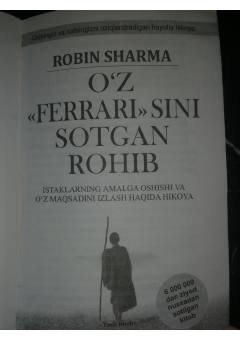

OFHayotiy maqsad va ma'naviy uyg'onish haqidagi ilhomlantiruvchi hikoya.
Kitob muvaffaqiyatli advokat Julian Mentelning kutilmagan ma'naviy uyg'onishi va boy hayotni tark etib, o'z maqsadini izlash yo'lidagi sarguzashtlari haqida hikoya qiladi. Asar insonning o'zligini topishi, nafsni tiyish va hayot mazmunini anglashga qaratilgan hayotiy saboqlarni beradi.